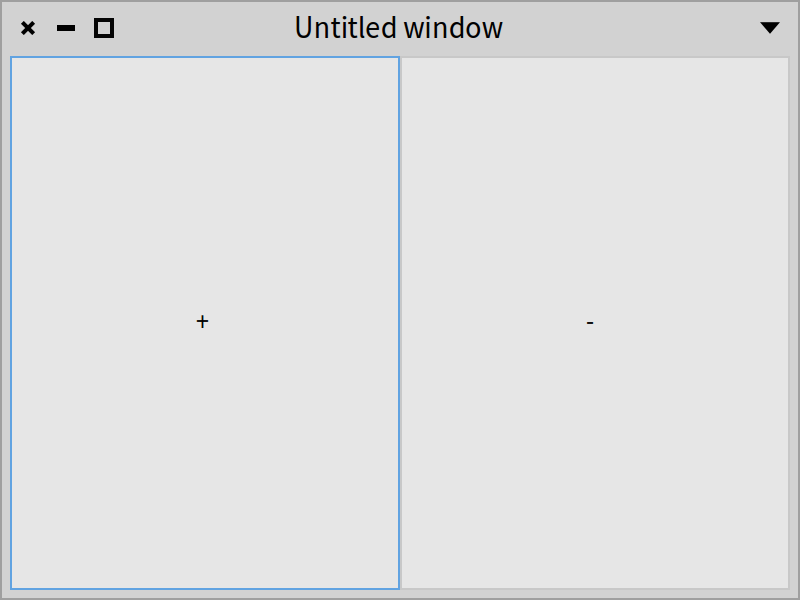
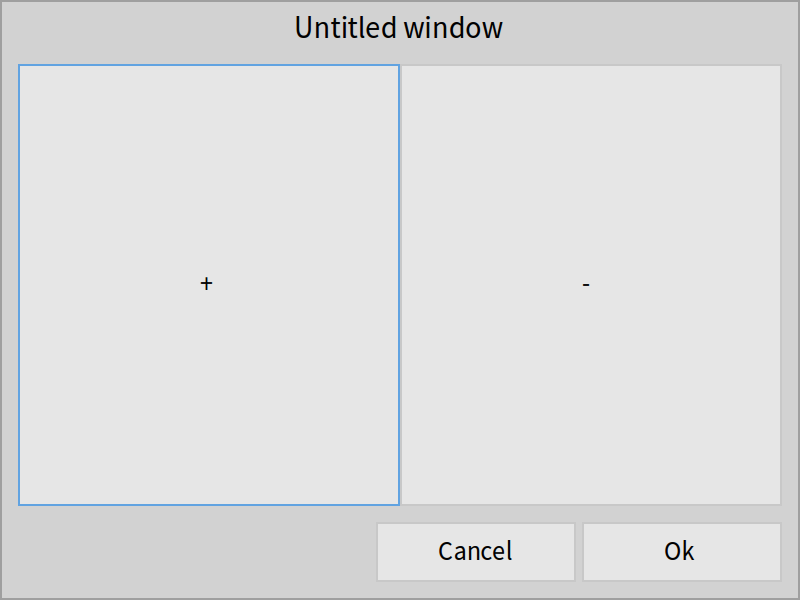
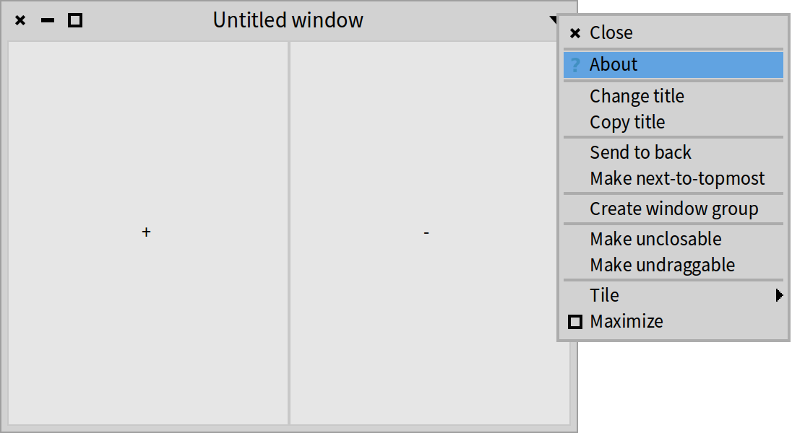
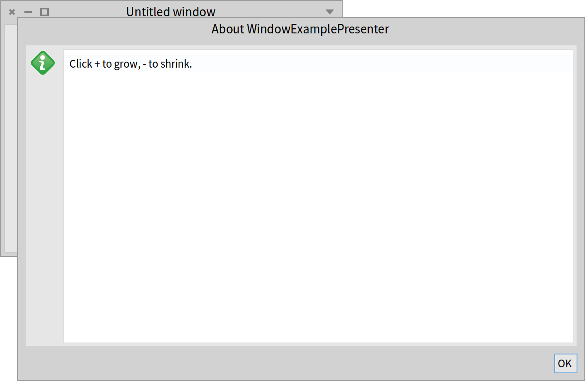
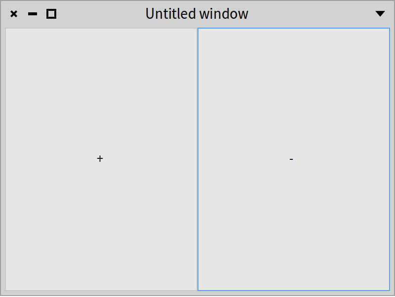
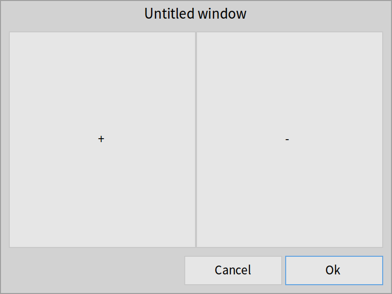

9 Managing windows
So far we have described the reuse of SpPresenters, discussed the fundamental functioning of Spec, and presented how to layout the widgets of a user interface. Yet what is still missing for a working user interface is showing all these widgets inside of a window. In our examples until now we have only shown a few of the features of Spec for managing windows, basically restricting ourselves to opening a window.
In this chapter, we provide a more complete overview of how Spec allows for the management of windows. We will show opening and closing, the built-in dialog box facility, the sizing of windows, and all kinds of window decoration.
9.1 A working example
To illustrate the window configuration options that are available, we use a simple WindowExamplePresenter class that has two buttons placed side by side. These buttons do not have any behavior associated yet. The behavior will be added in an example further down this chapter.

SpPresenter << #WindowExamplePresenter
slots: { #minusButton . #plusButton };
package: 'CodeOfSpec20Book'WindowExamplePresenter >> initializePresenters
plusButton := self newButton.
minusButton := self newButton.
plusButton label: '+'.
minusButton label: '-'WindowExamplePresenter >> defaultLayout
^ SpBoxLayout newLeftToRight
add: #plusButton;
add: #minusButton;
yourself9.2 Opening a window or a dialog box
A user interface can be opened as a normal window or opened as a dialog box, i.e. without decoration and with 'Ok' and 'Cancel' buttons. We will show how this is done, including the configuration options specific to dialog boxes. See also Section 9.5 for more information about window decoration.
Opening a window
As we have shown in previous chapters, to open a user interface you have to instantiate the SpPresenter for that interface and send the open message to the instance. That results in the creation of an instance of SpWindowPresenter which points to the window containing the user interface, and showing it in a window on the screen.
We have also seen the openWithLayout: method that takes a layout (instance of SpLayout subclasses) as an argument. Instead of using the default layout, the opened UI will use the layout passed as an argument.
Below we show the two ways we can open a window for our WindowExamplePresenter. The code snippet opens two identical windows as shown in Figure 9.1.
| presenter |
presenter := WindowExamplePresenter new.
presenter open.
presenter openWithLayout: presenter defaultLayoutOpening a dialog box
Spec provides an easy way to open a UI as a simple dialog box with 'Ok' and 'Cancel' buttons. A dialog box does not have icons for resizing and closing, nor a window menu. To open a dialog box, send the message openDialog:
| presenter dialog |
presenter := WindowExamplePresenter new.
dialog := presenter openDialogThe answer of sending openDialog, assigned to the dialog variable above, is an instance of the SpDialogWindowPresenter class (a subclass of SpWindowPresenter). Figure 9.2 shows the dialog.

The SpDialogWindowPresenter instance can be configured in multiple ways. To execute code when the user clicks on a button, send it the okAction: or cancelAction: message with a zero-argument block.
| presenter dialog |
presenter := WindowExamplePresenter new.
dialog := presenter openDialog
okAction: [ 'okAction' crTrace ];
cancelAction: [ 'cancelAction' crTrace ]The message canceled sent to dialog will return true if the dialog is closed by clicking on the 'Cancel' button.
9.3 Preventing window close
Spec provides a way to check if a window can effectively be closed when the user clicks on the close box. SpWindowPresenter>>whenWillCloseDo: takes a block that decides whether the window can be closed. We can change our WindowExamplePresenter as follows:
WindowExamplePresenter >> initializeWindow: aWindowPresenter
aWindowPresenter whenWillCloseDo: [ :announcement |
announcement denyClose ]The block has an announcement argument. It will be bound to an instance of SpWindowWillClose. That class has two interesting methods: allowClose and denyClose. The code snippet above sends denyClose to the announcement. By doing so, we have effectively created an unclosable window!
To be able to close this window, we have to change the implementation of the above method. By default a window can be closed, so the block should only send denyClose in case the window cannot be closed. Let's adapt the block to ask whether the user is sure about closing the window.
WindowExamplePresenter >> initializeWindow: aWindowPresenter
aWindowPresenter whenWillCloseDo: [ :announcement |
(self confirm: 'Are you sure that you want to close the window?')
ifFalse: [ announcement denyClose ] ]Of course, the example method above is extremely simplistic and not very useful. Instead, it should use application-dependent logic of what to check on window close.
9.4 Acting on window close
It is also possible to perform an action whenever a window is closed, both with a plain window or a dialog window.
With a window
When you want to be notified that a window is closed, you should redefine the initializeWindow: method in the class of your presenter as follows:
WindowExamplePresenter >> initializeWindow: aWindowPresenter
aWindowPresenter whenClosedDo: [ self inform: 'When closed' ]The following snippet programmatically opens and closes a window and you should see the notification triggered on close.
| presenter window |
presenter := WindowExamplePresenter new.
window := presenter open.
window closeWith a dialog window
When you want the same behavior with a dialog window you can either use the mechanism as described previously (i.e. declare your interest in window closing in the method initializeWindow:) or configure the dialog presenter returned by the message openDialog.
| presenter dialog |
presenter := WindowExamplePresenter new.
dialog := presenter openDialog.
dialog
okAction: [ 'okAction' crTrace ];
cancelAction: [ 'cancelAction' crTrace ];
whenClosedDo: [ self inform: 'Bye bye!' ]Action with Window
The message withWindowDo: makes sure that the presenter that scheduled the window still exists or is in a state that makes sense.
presenter withWindowDo: [ :window | window title: 'MyTitle' ]9.5 Window size and decoration
Now we focus on sizing a window before and after opening it, and then describe removing the different control widgets that decorate the window.
Setting initial size and changing size
To set the initial size of a window when it opens, send the initialExtent: message to the corresponding SpWindowPresenter before opening, for example like this:
| windowPresenter |
windowPresenter := WindowExamplePresenter new asWindow.
windowPresenter initialExtent: 300@80.
windowPresenter openThe common way to specify the initial size of the window is to use the message initialExtent: as follows:
WindowExamplePresenter >> initializeWindow: aWindowPresenter
aWindowPresenter initialExtent: 80@100Note that you can also set an initial position using the message initialPosition:.
After a window is opened, it can also be resized by sending the resize: message to the window of the UI. For example, we can change our example's initializePresenters method so that the window resizes itself depending on which button is clicked.
WindowExamplePresenter >> initializePresenters
plusButton := self newButton.
minusButton := self newButton.
plusButton label: '+'.
minusButton label: '-'.
plusButton action: [ self window resize: 500@200].
minusButton action: [ self window resize: 200@100]You have also centered, centeredRelativeTo: and centeredRelativeToTopWindow to help you place the windows relative to world/other windows.
Fixed size
The size of a window can be fixed, so that the user cannot resize it by dragging the sides or corners as follows:
| presenter |
presenter := WindowExamplePresenter new open.
presenter window beUnresizeableRemoving window decoration
Sometimes it makes sense to have a window without decoration, i.e. without control widgets. Currently, this configuration cannot be performed on the SpWindowPresenter of that window, but the underlying widget library may allow it. Below we show how to get the SpWindow of our example and instruct it to remove the different control widgets:
| presenter |
presenter := WindowExamplePresenter new open.
presenter window
removeCollapseBox;
removeExpandBox;
removeCloseBox;
removeMenuBoxThis window is still closable using the halo menus or by callingcloseon theSpWindowPresenterinstance (presenterin the example above).
Setting and changing the title
By default, the title of a new window is 'Untitled window'. Of course, this can be changed. The first way is to specialize the method initializeWindow:
to send the message title: to the windowPresenter as follows:
WindowExamplePresenter >> initializeWindow: aWindowPresenter
aWindowPresenter title: 'Click to grow or shrink.'In addition, you can set the title of any UI after it has been opened (even if it specifies a title method) by sending the title: message with the new title as an argument to the window of the UI. An example is:
| presenter |
presenter := WindowExamplePresenter new.
presenter open.
presenter window title: 'I am different!'Setting the about text
The about text of a window can be used by application developers to give a description of the application, and to list its contributors. The about text can be opened by selecting 'About' from the pop-up menu in the top-right corner of a window, as shown in Figure 9.3.

To set the about text of a window, either override the aboutText method of the corresponding SpPresenter so that it returns the new about text, or send the instance the aboutText: message before opening, for example as below.
| windowPresenter |
windowPresenter := WindowExamplePresenter new asWindow.
windowPresenter aboutText: 'Click + to grow, - to shrink.'.
windowPresenter openAfter opening the window with the code snippet above, and after choosing 'About' from the window menu, the about window opens with the configured about text, as shown in Figure 9.4.

9.6 Getting values from a dialog window
Sending the message openDialog to a presenter will return the dialog window itself so that you can easily send it the message isOk. When isOk answers true, the dialog is in a state to provide the data it has collected from the user.
Let's look at an example. We will open a dialog to select some colors.
Configuring the UI makes up for the largest part of the code below, but the interesting part is at the end. The canceled state is the default state of a dialog so we have to tell the dialog that it is not canceled. We do that in the okAction block, where the dialog receives the message beOk.
Then in the whenClosedDo: block, we send isOk to the dialog. If that message answers true, it makes sense to process the selection of colors. For the sake of simplicity of this example, we just inspect the selected colors.
| selectedColors presenter colorTable dialogPresenter |
selectedColors := Set new.
presenter := SpPresenter new.
colorTable := presenter newTable
items: (Color red wheel: 10);
addColumn: (SpCheckBoxTableColumn new
evaluated: [ :color | selectedColors includes: color ];
onActivation: [ :color | selectedColors add: color];
onDeactivation: [ :color | selectedColors remove: color];
width: 20;
yourself);
addColumn: (SpStringTableColumn new
evaluated: [ :color | '' ];
displayBackgroundColor: [ :color | color ];
yourself);
hideColumnHeaders;
yourself.
presenter layout: (SpBoxLayout newTopToBottom
add: colorTable;
yourself).
dialogPresenter := presenter openDialog.
dialogPresenter
title: 'Select colors';
okAction: [ :dialog | dialog beOk ];
whenClosedDo: [ dialogPresenter isOk
ifTrue: [ selectedColors inspect ] ]9.7 Little modal dialog presenters
A modal dialog is a window that takes control of the entire Pharo user interface, making it impossible for the user to select another window while it is open.
Spec provides some little predefined dialogs to inform or request information from the users. Most of them inherit from SpDialogPresenter. They offer a builder API to configure them.
The simplest dialog is an alert.
SpAlertDialog new
title: 'Inform example';
label: 'You are seeing an inform dialog!';
acceptLabel: 'Close this!';
openModalConfirm dialogs are created as follows:
SpConfirmDialog new
title: 'Confirm example';
label: 'Are you sure?';
acceptLabel: 'Sure!';
cancelLabel: 'No, forget it';
onAccept: [ :dialog| dialog alert: 'Yes!' ];
onCancel: [ :dialog| dialog alert: 'No!' ];
openModalThe idiomatic way to use them is to access them via the application of your presenter class:
self application newAlert
title: 'Inform example';
label: 'You are seeing an inform dialog!';
acceptLabel: 'Close this!';
openModalSpApplication offers the following API: newConfirm, newAlert, newJobList, newRequest, newSelect, newRequestText.
9.8 Placing a presenter inside a dialog window
Any presenter can be placed in a dialog window by specializing the method SpAbstractPresenter>>initializeDialogWindow:, which is implemented like this:
WindowExamplePresenter >> initializeDialogWindow: aDialogWindowPresenter
"Used to initialize the model in the case of the use into a dialog window.
Override this to set buttons other than the default (Ok, Cancel)."
aDialogWindowPresenter
addButton: 'Cancel' do: [ :presenter |
presenter triggerCancelAction.
presenter close ];
addDefaultButton: 'Ok' do: [ :presenter |
presenter triggerOkAction.
presenter close ]Override this method to define how your presenter will behave when it is open in a dialog window.
9.9 Setting keyboard focus
Some widgets can take keyboard focus. All text editing widgets come to mind, but lists can also take keyboard focus. Buttons too. In principle, when a presenter responds to keyboard events, it is able to take keyboard focus.
Widgets indicate that they have keyboard focus, typically by displaying a lightblue border around them. Figure 9.1 shows that the plus button on the left has the keyboard focus. A widget takes keyboard focus when the user clicks the widget with the mouse, or by pressing the tab key.
By pressing the tab key, the user makes the keyboard focus move forward from widget to widget according to the keyboard focus order of the widgets. By pressing shift-tab, the focus moves backward according to the focus order. By default, the focus order is the same as the order in which widgets are added to a user interface. Sometimes that order is not the desired order. In that case, the focus order has to be configured explicitly. A presenter can do that in the method initializePresenters by sending focusOrder: or by adding presenters to the answer of sending focusOrder. Let's try that in the WindowExamplePresenter.
WindowExamplePresenter >> initializePresenters
plusButton := self newButton.
minusButton := self newButton.
plusButton label: '+'.
minusButton label: '-'.
self focusOrder
add: minusButton;
add: plusButtonFigure 9.5 shows the result after opening the window. The minus button has the keyboard focus.

9.10 Acting on window opening
Some state of presenters or their subpresenters can only be set after the window has been opened. That is the case when setting the state is delegated to the backend widgets. Those widgets are only available when the window is open. In Chapter 13, we will see that keyboard bindings for menu items in the menubar can only be assigned after opening the window. Here we will describe another use case, related to the previous section.
While defining the keyboard focus order does not require the window to be open, setting the initially focussed presenter does. Setting the initially focussed presenter is needed when the default keyboard focus order is not appropriate. That typically happens when using nested presenters that define a focus order, either implicitly or explicitly.
To demonstrate this, we will revert the method initializePresenters of WindowExamplePresenter from the previous section, and we will adapt initializeWindow:.
WindowExamplePresenter >> initializePresenters
plusButton := self newButton.
minusButton := self newButton.
plusButton label: '+'.
minusButton label: '-'To set the initial keyboard focus on the minus button, we send takeKeyboardFocus to the presenter in the whenOpenedDo: block, which will be evaluated after opening the window.
WindowExamplePresenter >> initializeWindow: aWindowPresenter
aWindowPresenter whenOpenedDo: [ minusButton takeKeyboardFocus ]After opening the window, we see the keyboard focus on the minus button, as shown in 9.5.
We can go one step further. When opening an instance of WindowExamplePresenter in a dialog with WindowExamplePresenter new openDialog, the plus button has the keyboard focus because it is the first presenter in the default keyboard focus order. See Figure 9.2.
In case of a dialog, the initial keyboard focus on the plus button may not be desired. Probably it is more logical to put the keyboard focus on the Ok button of the dialog, so that the user can press the Enter key or the Space key to confirm the dialog immediately if no other interaction with the dialog is necessary. Let's do that. Instead of changing the method initializeWindow:, we change the method initializeDialogWindow:.
WindowExamplePresenter >> initializeDialogWindow: aDialogWindowPresenter
super initializeDialogWindow: aDialogWindowPresenter.
aDialogWindowPresenter whenOpenedDo: [ aDialogWindowPresenter defaultButton takeKeyboardFocus ]aDialogWindowPresenter, which is bound to an instance of SpDialogWindowPresenter, understands the message defaultButton, which answers the Ok button. We send the message takeKeyboardFocus to the button. After opening the dialog with WindowExamplePresenter new openDialog, we see a dialog as shown in Figure 9.6, with the keyboard focus on the Ok button.

9.11 Conclusion
In this chapter, we treated the features of Spec that have to do with windows. First we described opening and closing windows as well as how to open a window as a dialog box. That was followed by configuring the window's size and its decorating widgets. After highlighting small yet important details of the window like its title and the about text, the chapter ended with handling dialogs.